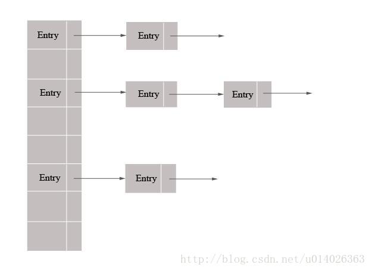

2018-5-2HashMap源码
HashMap简介
HashMap是基于哈希表实现的即数据和链表，每一个元素是一个key-value对，其内部通过单链表解决hash冲突问题，容量不足（超过了阀值）时，数组会发生一次扩容。
结构如下

Node节点
内部类的定义方式:
static class Node
内有四个属性
final int hash;对应每个节点的hash值
final K key;
V value;
Node
HashMap源码分析
put方法
public V put(K key, V value) {
public V get(Object key) { 本文讲述了HashMap的put方法和get方法，以及提及HashMap扩容时候的操作。还有一些例如红黑树，位运算定位到具体的下标，JDK1.8以下版本在并发过程中成环等等操作没有提及，红黑树目前也了解个大概，仍需继续学习。 关键字词: HashMap源码
return putVal(hash(key), key, value, false, true);
}
putVal方法
final V putVal(int hash, K key, V value, boolean onlyIfAbsent,
boolean evict) {
Node
Node
if ((tab = table) == null || (n = tab.length) == 0)//判断是不是初始化的数据，如果是默认一个大小
n = (tab = resize()).length;
if ((p = tab[i = (n - 1) & hash]) == null)//判断当前节点中的值是不是为空，如果没有值那么就创建一个节点添加进去
tab[i] = newNode(hash, key, value, null);
else {
Node
if (p.hash == hash &&
((k = p.key) == key || (key != null && key.equals(k))))//判断hash值和key值是否完全相等
e = p;
else if (p instanceof TreeNode)//判断是否为红黑树节点
e = ((TreeNode
else {//链表
for (int binCount = 0; ; ++binCount) {
if ((e = p.next) == null) {
p.next = newNode(hash, key, value, null);
if (binCount >= TREEIFY_THRESHOLD - 1) // -1 for 1st
treeifyBin(tab, hash);
break;
}
if (e.hash == hash &&
((k = e.key) == key || (key != null && key.equals(k))))
break;
p = e;
}
}
if (e != null) { //put方法返回该节点的中的旧值。
V oldValue = e.value;
if (!onlyIfAbsent || oldValue == null)
e.value = value;
afterNodeAccess(e);
return oldValue;
}
}
++modCount;
if (++size > threshold)//如果当前大小大于临界点，扩容。
resize();
afterNodeInsertion(evict);
return null;
}resize扩容
final Node
Node
int oldCap = (oldTab == null) ? 0 : oldTab.length;
int oldThr = threshold;//阀值
int newCap, newThr = 0;
if (oldCap > 0) {
if (oldCap >= MAXIMUM_CAPACITY) {
threshold = Integer.MAX_VALUE;
return oldTab;
}
else if ((newCap = oldCap << 1) < MAXIMUM_CAPACITY &&
oldCap >= DEFAULT_INITIAL_CAPACITY)
newThr = oldThr << 1; //扩充为原来的俩倍
}
else if (oldThr > 0)
newCap = oldThr;
else { //HashMap初始化时候的大小
newCap = DEFAULT_INITIAL_CAPACITY;
newThr = (int)(DEFAULT_LOAD_FACTOR * DEFAULT_INITIAL_CAPACITY);//阀值=大小*加载因子
}
if (newThr == 0) {
float ft = (float)newCap * loadFactor;
newThr = (newCap < MAXIMUM_CAPACITY && ft < (float)MAXIMUM_CAPACITY ?
(int)ft : Integer.MAX_VALUE);
}
threshold = newThr;
@SuppressWarnings({"rawtypes","unchecked"})
Node
table = newTab;
if (oldTab != null) {//扩充之后 把原来的结构转移到新的数据结构中
for (int j = 0; j < oldCap; ++j) {
Node
if ((e = oldTab[j]) != null) {
oldTab[j] = null;
if (e.next == null)
newTab[e.hash & (newCap - 1)] = e;
else if (e instanceof TreeNode)
((TreeNode
else { // preserve order
Node
Node
Node
do {
next = e.next;
if ((e.hash & oldCap) == 0) {
if (loTail == null)
loHead = e;
else
loTail.next = e;
loTail = e;
}
else {
if (hiTail == null)
hiHead = e;
else
hiTail.next = e;
hiTail = e;
}
} while ((e = next) != null);
if (loTail != null) {
loTail.next = null;
newTab[j] = loHead;
}
if (hiTail != null) {
hiTail.next = null;
newTab[j + oldCap] = hiHead;
}
}
}
}
}
return newTab;
}
get方法：根据对应的key的hash值找到相应的值
Node
return (e = getNode(hash(key), key)) == null ? null : e.value;
}
具体的实现方法是getNode方法
final Node
Node
if ((tab = table) != null && (n = tab.length) > 0 &&
(first = tab[(n - 1) & hash]) != null) {
if (first.hash == hash && // always check first node
((k = first.key) == key || (key != null && key.equals(k)))
)
return first;
if ((e = first.next) != null) {
if (first instanceof TreeNode)
return ((TreeNode
do {
if (e.hash == hash &&
((k = e.key) == key || (key != null && key.equals(k))))
return e;
} while ((e = e.next) != null);
}
}
return null;
}总结